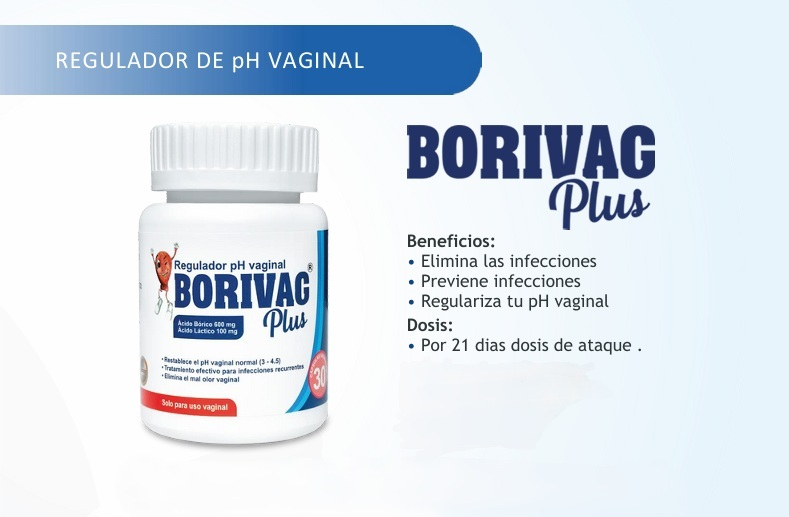
Borivag Plus
Cápsulas vaginales que regulan el pH y combaten infecciones.

Cápsulas vaginales que regulan el pH y combaten infecciones.
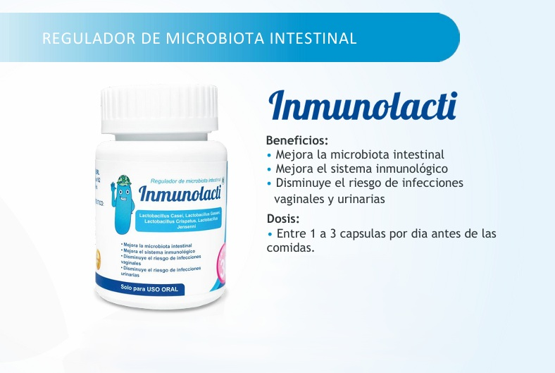
Probióticos especializados para fortalecer la flora vaginal y prevenir infecciones recurrentes.
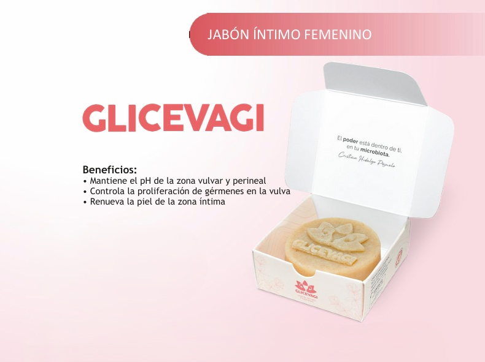
Jabón íntimo que protege y mantiene la frescura.
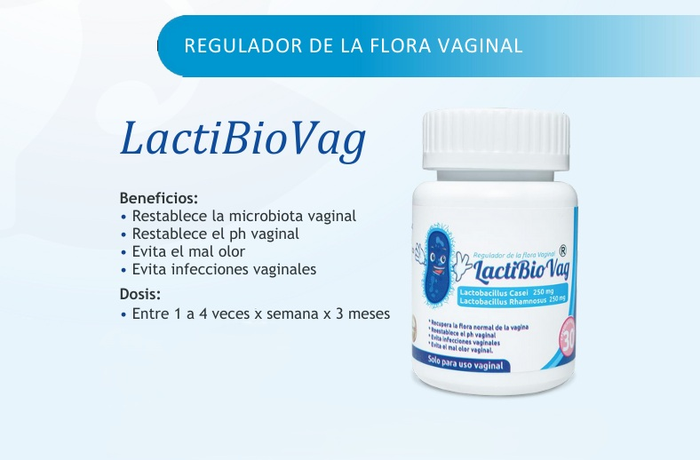
Equilibrio íntimo y prevención de infecciones vaginales.
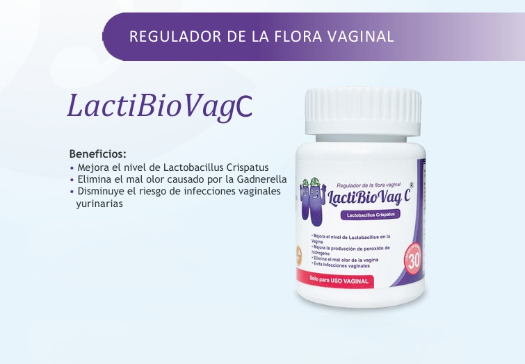
Restaura tu flora vaginal y reduce mal olor.
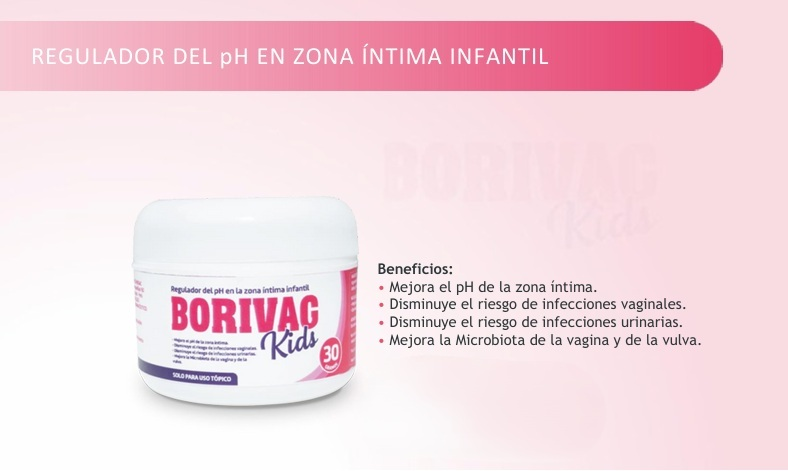
Cuidado íntimo para niñas y adolescentes.
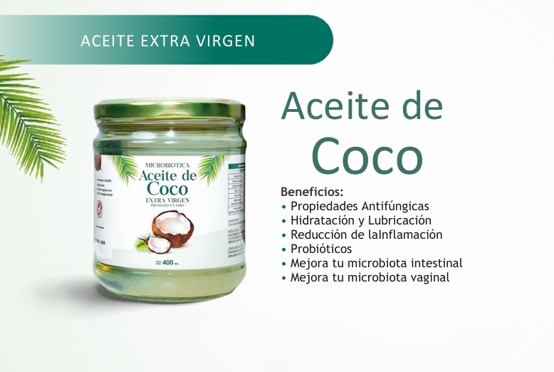
Lubricación e hidratación íntima para tu comodidad diaria.
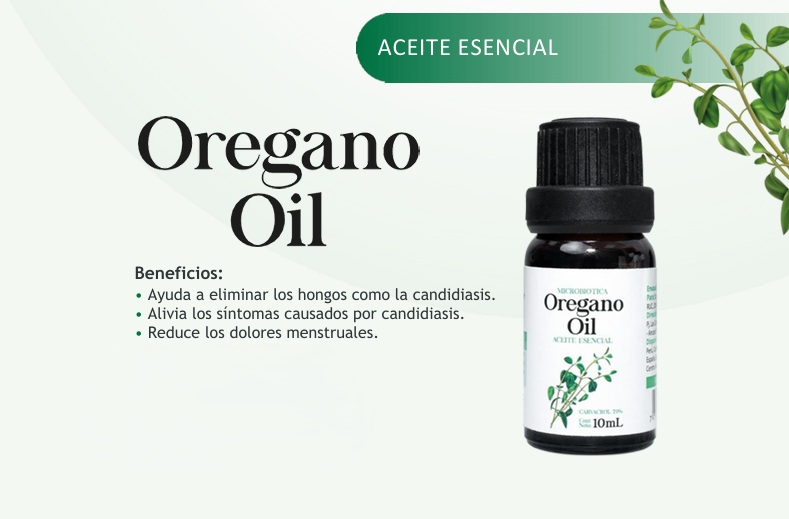
Alivio natural contra la candidiasis y los hongos molestos.
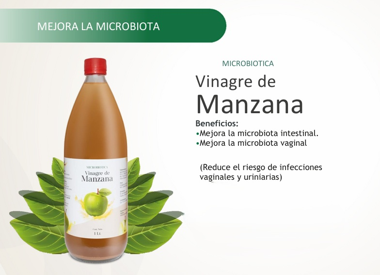
Ayuda a mantener tu pH vaginal equilibrado.
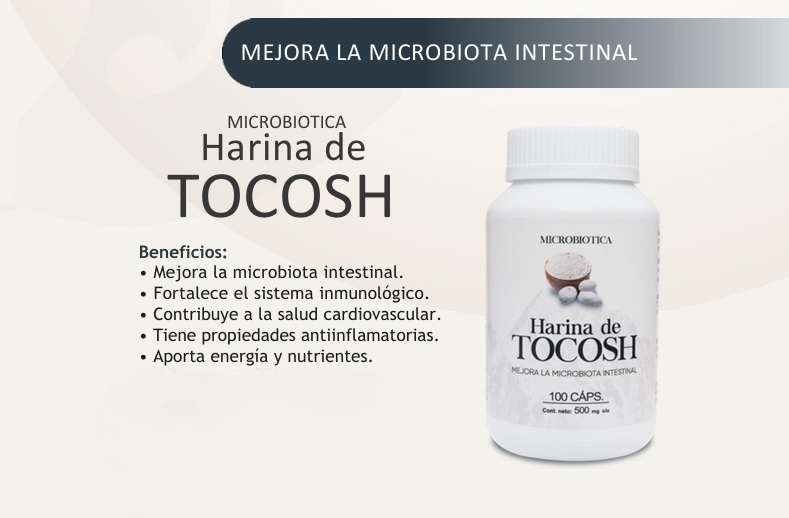
Probiótico andino que refuerza tus defensas íntimas.
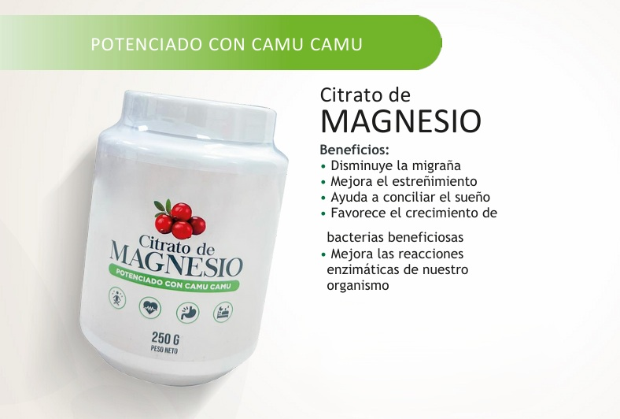
Relaja los músculos pélvicos y alivia cólicos menstruales.
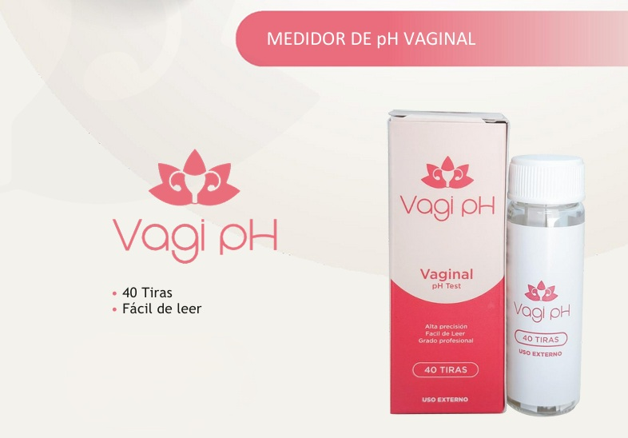
Revisa tu pH íntimo y previene molestias a tiempo.
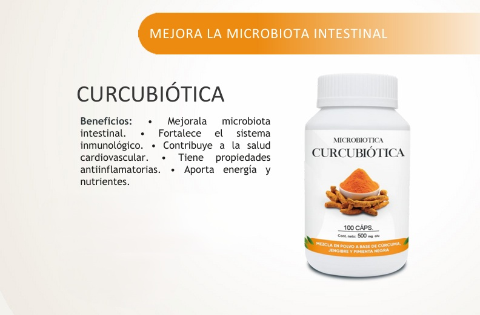
Mejora tu digestión y ayuda a tu flora íntima.
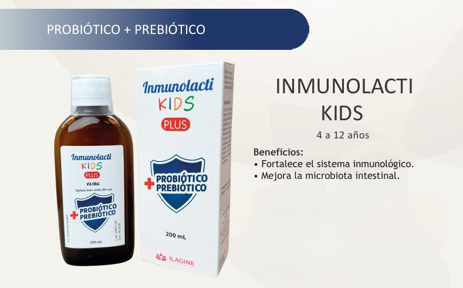
Protección natural para niñas en crecimiento.
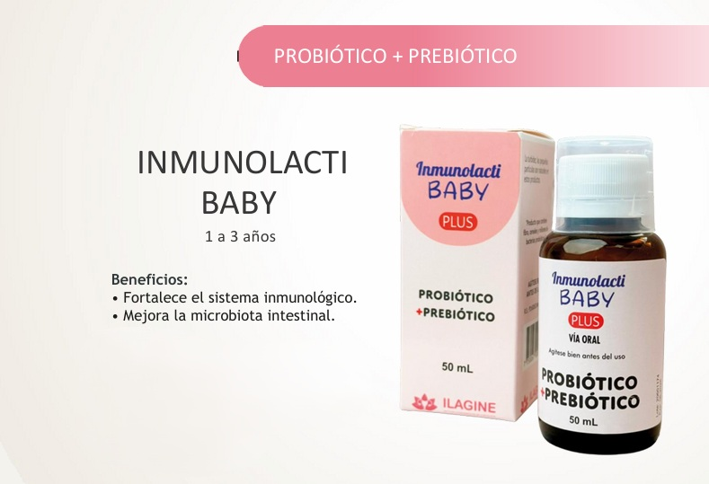
Defensas fuertes para un futuro femenino saludable.
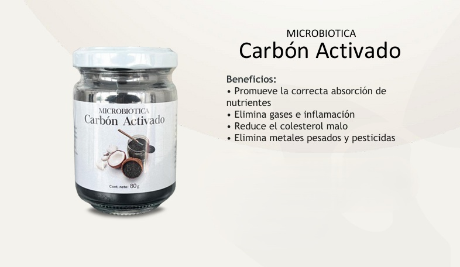
Limpieza interna que ayuda a evitar desequilibrios vaginales.
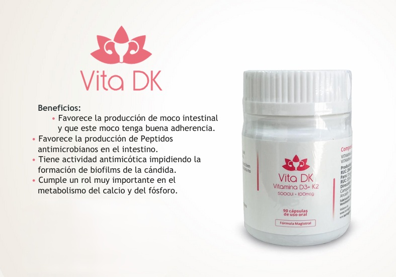
Refuerza tus defensas frente a infecciones íntimas.
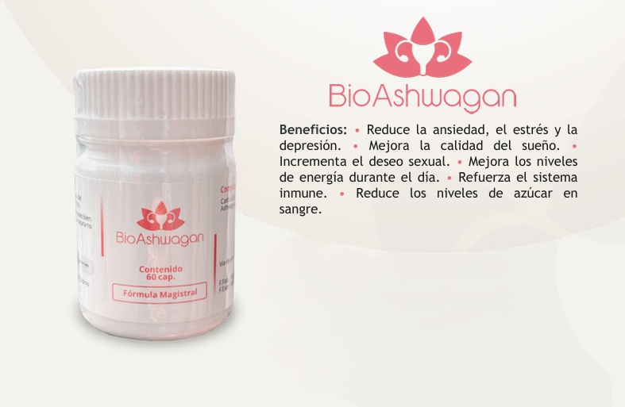
Menos estrés, mejor ánimo y bienestar íntimo.
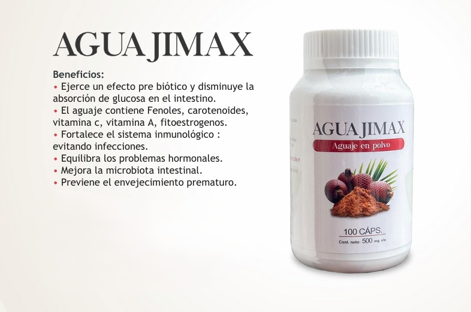
Apoyo en cambios hormonales y cuidado femenino natural.
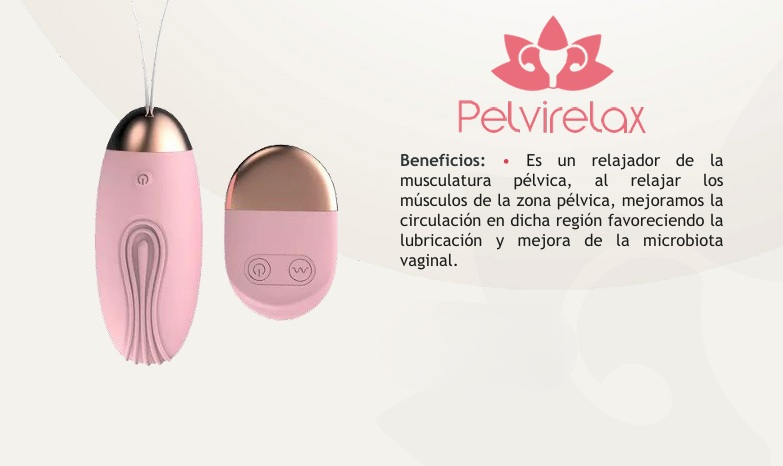
Relaja tu zona íntima y mejora la circulación pélvica.
WhatsApp: +51 992 716 072
Email: borivagselvacentral@gmail.com
Redes Sociales: Facebook | Instagram | TikTok
Atención: 24/7 - Envíos a todo el Perú por Shalom y Olva Courier